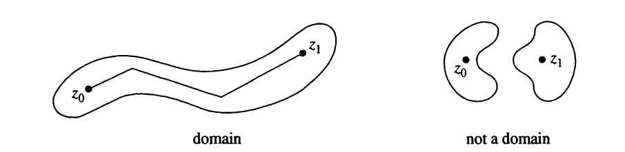
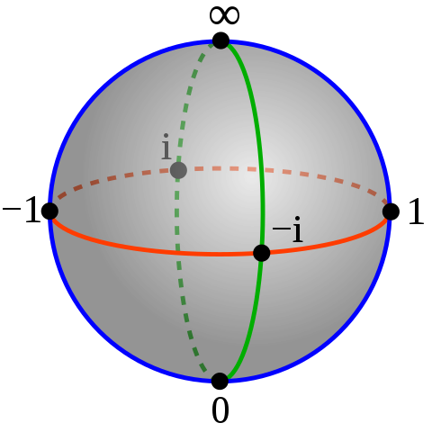

Chapter 4 Uniformization by square domains
Definition 4.1 (Domain) A subset \(D\) of the complex plane is a domain if \(D\) is open and if any two points of \(D\) can be connected by a broken line segment in \(D\).

Example 4.1
- Examples:
- Open half planes
- Open disks
- Open sectors
- Open annuli,
- Open punctured disks.
- Non Examples:
- Union of the open upper and lower half-planes \(=U = \mathbb{C}\setminus\mathbb{R}\).
(It is impossible to connect a point in the upper half-plane to a point in the lower half-plane by a broken line segment that does not cross the real line. )
- Union of the open upper and lower half-planes \(=U = \mathbb{C}\setminus\mathbb{R}\).
Definition 4.2 (Riemann Sphere) The Riemann sphere, also called the extended complex plane consist of the complex numbers \(\mathbb{C}\) together with \(\infty\). The set of extended complex numbers may be written as \(\mathbb{C} \cup \{\infty\}\).
Notation: \(\hat{\mathbb{C}}=\mathbb{C} \cup \{\infty\}\)

Definition 4.3 A domain in the plane is “simply connected” if it has no “holes.”
Example 4.2
- Example
- Disks
- Rectangles
- *Non Example
- Annuli
- Punctured disks
- Punctured plane
(Becasue they have “holes”)
Later we discuss this more precise
Definition 4.4 (Meromophic) A function \(f(z)\) is meromorphic on a domain \(D\) if \(f(z)\) is analytic on \(D\) except possibly at isolated singularities, each of which is a pole.
Proof. (Proof of Therom 1.1 in th paper)
Let \(\Omega\) be a finitely connected domain in \(\hat{\mathbb{C}}\) with \(\infty\in \Omega\) It is a known fact that there exists a conformal map \(g\) of \(\Omega\) onto a square domain \(\tilde{\Omega}\) with the normalization
\[g(z) = z + \frac{b_1}{z} + \ldots\]
near \(\infty\).
The map \(f \in \mathcal{F} \mapsto \tilde{f} := f \circ g^{-1}\) is a bijection between \(\mathcal{F}\) and \(\tilde{\mathcal{F}}\). Moreover, if \[f(z) = z + \frac{a_1}{z} + \ldots ~\text{ and } \tilde{f}(z) = z + \frac{\tilde{a_1}}{z} + \ldots\] near \(\infty\), then \(\tilde{a}_1 = a_1 - b_1\).
Let \(f\) be as in the statement. We consider the rectangle \(R = [-l,l] \times [-r,r] \subset \mathbb{C}\) for large \(r > 0\). Here we chose \(l= = r^{2/3}\) so that \[ \frac{l}{r} \to 0 \quad \text{and} \quad \frac{r}{l^2} \to 0\] as \(r \to \infty\).
In the following, we assume that \(r\) is so large that \(\widetilde{C}\setminus \Omega\) is contained in the interior of \(R\). Then \(\partial R \subset \widetilde{C}\setminus \Omega\) and \(j=f(R)\) is a Jordan curve in \(\mathbb{C}\). We want to
\[\begin{eqnarray} A &=& \frac{1}{2i} \int_J \bar{w} dw\\ &=& \frac{1}{2i} \int_{\partial R} \bar{f(z)}f'(z) dz\\ &=& \frac{1}{2i} \int_{\partial R} \overline{\left(z + \frac{a_1}{z} + \ldots \right)} \left(1 - \frac{a_1}{z^2} + \ldots \right) dz\\ &=& \frac{1}{2i} \int_{\partial R} \left(\bar{z} + \frac{\bar{a}_1}{\overline{z}}-\frac{\bar{a}_1\bar{z}}{z^2} + O\left(\frac{1}{|z|^2}\right)\right) dz\\ &=& 4rl + \int_{\partial R} \text{Im} \left(\frac{\bar{a}_1 z}{\bar{z}}\right) \frac{dz}{z} + o(1). \end{eqnarray}\]
Sure, I can provide a proof for the proposition. Here it goes:
Proposition: If a set \(A\) is a subset of the interior of another set \(B\) (denoted as \(A \subseteq Int(B)\)), then the complement of \(A\) (denoted as \(A^c\)) is a subset of the boundary of \(B\) (denoted as \(bd(B)\)).
Proof:
Let’s denote the interior of \(B\) as \(Int(B)\) and the boundary of \(B\) as \(bd(B)\). By definition, we have:
- \(Int(B) = B - bd(B)\)
- \(A^c = U - A\) where \(U\) is the universal set.
Given that \(A \subseteq Int(B)\), we can say that \(A\) does not contain any points from \(bd(B)\). Therefore, all points in \(bd(B)\) must be in \(A^c\).
Hence, \(A^c \subseteq bd(B)\).
This completes the proof. Please note that this is a general proof and the specifics might vary depending on the exact definitions and properties of the sets and the topological space they are in. If you have a specific example or further questions, feel free to ask!